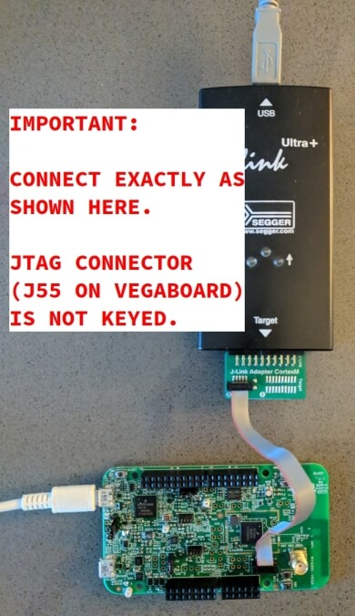

OpenISA VEGAboard¶
Overview¶
The VEGAboard contains the RV32M1 SoC, featuring two RISC-V CPUs, on-die XIP flash, and a full complement of peripherals, including a 2.4 GHz multi-protocol radio. It also has built-in sensors and Arduino-style expansion connectors.
Fig. 196 OpenISA VEGAboard (image copyright: www.open-isa.org)¶
The two RISC-V CPUs are named RI5CY and ZERO-RISCY, and are respectively based on the PULP platform designs by the same names: RI5CY and ZERO-RISCY. RI5CY is the “main” core; it has more flash and RAM as well as a more powerful CPU design. ZERO-RISCY is a “secondary” core. The main ZERO-RISCY use-case is as a wireless coprocessor for applications running on RI5CY. The two cores can communicate via shared memory and messaging peripherals.
Currently, Zephyr supports RI5CY with the rv32m1_vega_ri5cy board
configuration name, and ZERO_RISCY with the rv32m1_vega_zero_riscy board
configuration name.
Hardware¶
The VEGAboard includes the following features.
RV32M1 multi-core SoC:
1 MiB flash and 192 KiB SRAM (RI5CY core)
256 KiB flash and 128 KiB SRAM (ZERO-RISCY core)
Low power modes
DMA support
Watchdog, CRC, cryptographic acceleration, ADC, DAC, comparator, timers, PWM, RTC, I2C, UART, SPI, external memory, I2S, smart card, USB full-speed, uSDHC, and 2.4 GHz multiprotocol radio peripherals
On-board sensors and peripherals:
32 Mbit SPI flash
6-axis accelerometer, magnetometer, and temperature sensor (FXOS8700)
Ambient light sensor
RGB LED
microSD card slot
Antenna interface
Additional features:
Form-factor compatible with Arduino Uno Rev 3 expansion connector layout (not all Arduino shields may be pin-compatible)
UART via USB using separate OpenSDA chip
RISC-V flash and debug using external JTAG dongle (not included) via 2x5 5 mil pitch connector (commonly called the “ARM 10-pin JTAG” connector)
Supported Features¶
Zephyr’s RI5CY configuration, rv32m1_vega_ri5cy, currently supports
the following hardware features:
Interface |
Controller |
Driver/Component |
|---|---|---|
EVENT |
on-chip |
event unit interrupt controller |
INTMUX |
on-chip |
level 2 interrupt controller |
LPTMR |
on-chip |
lptmr-based system timer |
PINMUX |
on-chip |
pinmux |
GPIO |
on-chip |
gpio |
UART |
on-chip |
serial |
I2C(M) |
on-chip |
i2c |
SPI |
on-chip |
spi |
TPM |
on-chip |
pwm |
SENSOR |
off-chip |
fxos8700 polling; fxos8700 trigger; |
Zephyr’s ZERO-RISCY configuration, rv32m1_vega_zero_riscy, currently
supports the following hardware features:
Interface |
Controller |
Driver/Component |
|---|---|---|
EVENT |
on-chip |
event unit interrupt controller |
INTMUX |
on-chip |
level 2 interrupt controller |
LPTMR |
on-chip |
lptmr-based system timer |
PINMUX |
on-chip |
pinmux |
GPIO |
on-chip |
gpio |
UART |
on-chip |
serial |
I2C(M) |
on-chip |
i2c |
TPM |
on-chip |
pwm |
SENSOR |
off-chip |
fxos8700 polling; fxos8700 trigger; |
BLE Software Link Layer experimental support¶
This is an experimental feature supported on the Zephyr’s RI5CY
configuration, rv32m1_vega_ri5cy. It uses the Software Link Layer
framework by Nordic Semi to enable the the on-SoC radio and transceiver for
implementing a software defined BLE controller. By using both the controller
and the host stack available in Zephyr, the following BLE samples can be used
with this board:
beacon
central
central_hr
eddystone
hci_uart
ibeacon
peripheral_csc (Cycling Speed Cadence)
peripheral_dis (Device Information Service)
peripheral_esp (Environmental Sensing Service)
peripheral_hr (Heart Rate)
peripheral_ht (Health Thermometer)
peripheral
scan_adv
Note
BLE Software Link Layer limitations:
no 512/256 Kbps PHY
no TX power adjustment
Connections and IOs¶
RV32M1 SoC pins are brought out to Arduino-style expansion connectors. These are 2 pins wide each, adding an additional row of expansion pins per header compared to the standard Arduino layout.
They are described in the tables in the following subsections. Since pins are usually grouped by logical function in rows on these headers, the odd- and even-numbered pins are listed in separate tables. The “Port/bit” columns refer to the SoC PORT and GPIO peripheral naming scheme, e.g. “E/13” means PORTE/GPIOE pin 13.
See the schematic and chip reference manual for details. (Documentation is available from the OpenISA GitHub releases page.)
Note
Pins with peripheral functionality may also be muxed as GPIOs.
Top right expansion header (J1)
Odd/bottom pins:
Pin |
Port/bit |
Function |
|---|---|---|
1 |
E/13 |
I2S_TX_BCLK |
3 |
E/14 |
I2S_TX_FS |
5 |
E/15 |
I2S_TXD |
7 |
E/19 |
I2S_MCLK |
9 |
E/16 |
I2S_RX_BCLK |
11 |
E/21 |
SOF_OUT |
13 |
E/17 |
I2S_RX_FS |
15 |
E/18 |
I2S_RXD |
Even/top pins:
Pin |
Port/bit |
Function |
|---|---|---|
2 |
A/25 |
UART1_RX |
4 |
A/26 |
UART1_TX |
6 |
A/27 |
GPIO |
8 |
B/13 |
PWM |
10 |
B/14 |
GPIO |
12 |
A/30 |
PWM |
14 |
A/31 |
PWM/CMP |
16 |
B/1 |
GPIO |
Top left expansion header (J2)
Odd/bottom pins:
Pin |
Port/bit |
Function |
|---|---|---|
1 |
D/5 |
FLEXIO_D25 |
3 |
D/4 |
FLEXIO_D24 |
5 |
D/3 |
FLEXIO_D23 |
7 |
D/2 |
FLEXIO_D22 |
9 |
D/1 |
FLEXIO_D21 |
11 |
D/0 |
FLEXIO_D20 |
13 |
C/30 |
FLEXIO_D19 |
15 |
C/29 |
FLEXIO_D18 |
17 |
C/28 |
FLEXIO_D17 |
19 |
B/29 |
FLEXIO_D16 |
Even/top pins:
Pin |
Port/bit |
Function |
|---|---|---|
2 |
B/2 |
GPIO |
4 |
B/3 |
PWM |
6 |
B/6 |
SPI0_PCS2 |
8 |
B/5 |
SPI0_SOUT |
10 |
B/7 |
SPI0_SIN |
12 |
B/4 |
SPI0_SCK |
14 |
GND |
|
16 |
AREF |
|
18 |
C/9 |
I2C0_SDA |
20 |
C/10 |
I2C0_SCL |
Bottom left expansion header (J3)
Note that the headers at the bottom of the board have odd-numbered pins on the top, unlike the headers at the top of the board.
Odd/top pins:
Pin |
Port/bit |
Function |
|---|---|---|
1 |
A/21 |
ARDUINO_EMVSIM_PD |
3 |
A/20 |
ARDUINO_EMVSIM_IO |
5 |
A/19 |
ARDUINO_EMVSIM_VCCEN |
7 |
A/18 |
ARDUINO_EMVSIM_RST |
9 |
A/17 |
ARDUINO_EMVSIM_CLK |
11 |
B/17 |
FLEXIO_D7 |
13 |
B/16 |
FLEXIO_D6 |
15 |
B/15 |
FLEXIO_D5 |
Even/bottom pins: note that these are mostly power-related.
Pin |
Port/bit |
Function |
|---|---|---|
2 |
SDA_GPIO0 |
|
4 |
BRD_IO_PER |
|
6 |
RST_SDA |
|
8 |
BRD_IO_PER |
|
10 |
P5V_INPUT |
|
12 |
GND |
|
14 |
GND |
|
16 |
P5-9V VIN |
Bottom right expansion header (J4)
Note that the headers at the bottom of the board have odd-numbered pins on the top, unlike the headers at the top of the board.
Odd/top pins:
Pin |
Port/bit |
Function |
|---|---|---|
1 |
TAMPER2 |
|
3 |
TAMPER1/RTC_CLKOUT |
|
5 |
TAMPER0/RTC_WAKEUP_b |
|
7 |
E/2 |
ADC0_SE19 |
9 |
E/5 |
LPCMP1_IN2/LPCMP1_OUT |
11 |
DAC0_OUT/ADC0_SE16/LPCMP0_IN3/LPCMP1_IN3 |
Even/bottom pins:
Pin |
Port/bit |
Function |
|---|---|---|
2 |
C/11 |
ADC0_SE6 |
4 |
C/12 |
ADC0_SE7 |
6 |
B/9 |
ADC0_SE3 |
8 |
E/4 |
ADC0_SE21 |
10 |
E/10 |
ADC0_SE19 (and E/10, I2C3_SDA via 0 Ohm DNP) |
12 |
E/11 |
ADC0_SE20 (and E/11, I2C3_SCL via 0 Ohm DNP) |
Additional Pins¶
For an up-to-date description of additional pins (such as buttons, LEDs, etc.) supported by Zephyr, see the board DTS files in the Zephyr source code, i.e. boards/riscv/rv32m1_vega/rv32m1_vega_ri5cy.dts for RI5CY and boards/riscv/rv32m1_vega/rv32m1_vega_zero_riscy.dts for ZERO-RISCY.
See the schematic in the documentation available from the OpenISA GitHub releases page for additional details.
System Clocks¶
The RI5CY and ZERO-RISCY cores are configured to use the slow internal reference clock (SIRC) as the clock source for an LPTMR peripheral to manage the system timer, and the fast internal reference clock (FIRC) to generate a 48MHz core clock.
Serial Port¶
The USB connector at the top left of the board (near the RESET button) is connected to an OpenSDA chip which provides a serial USB device. This is connected to the LPUART0 peripheral which the RI5CY and ZERO-RISCY cores use by default for console and logging.
Warning
The OpenSDA chip cannot be used to flash or debug the RISC-V cores.
See the next section for flash and debug instructions for the RISC-V cores using an external JTAG dongle.
Programming and Debugging¶
Important
To use this board, you will need:
a SEGGER J-Link debug probe to debug the RISC-V cores
a J-Link 9-Pin Cortex-M Adapter board and ribbon cable
the SEGGER J-Link Software and Documentation Pack software installed
A JTAG dongle is not included with the board itself.
Follow these steps to:
Get a toolchain and OpenOCD
Set up the board for booting RI5CY
Compile a Zephyr application for the RI5CY core
Flash the application to your board
Debug the board using GDB
Get the Toolchain and OpenOCD¶
Before programming and debugging, you first need to get a GNU toolchain and an OpenOCD build. There are vendor-specific versions of each for the RV32M1 SoC1.
Option 1 (Recommended): Prebuilt Toolchain and OpenOCD¶
The following prebuilt toolchains and OpenOCD archives are available on the OpenISA GitHub releases page:
Toolchain_Linux.tar.gzToolchain_Mac.tar.gzToolchain_Windows.zip
Download and extract the archive for your system, then extract the toolchain and OpenOCD archives inside.
Linux:
tar xvzf Toolchain_Linux.tar.gz
tar xvzf openocd.tar.gz
tar xvzf riscv32-unknown-elf-gcc.tar.gz
mv openocd ~/rv32m1-openocd
mv riscv32-unknown-elf-gcc ~
macOS (unfortunately, the OpenISA 1.0.0 release’s Mac
riscv32-unknown-elf-gcc.tar.gz file doesn’t expand into a
riscv32-unknown-elf-gcc directory, so it has to be created):
tar xvzf Toolchain_Mac.tar.gz
tar xvzf openocd.tar.gz
mkdir riscv32-unknown-elf-gcc
mv riscv32-unknown-elf-gcc.tar.gz riscv32-unknown-elf-gcc
cd riscv32-unknown-elf-gcc/
tar xvzf riscv32-unknown-elf-gcc.tar.gz
cd ..
mv openocd ~/rv32m1-openocd
mv riscv32-unknown-elf-gcc ~
Windows:
Extract
Toolchain_Windows.zipin the file managerExtract the
openocd.zipandriscv32-unknown-elf-gcc.zipfiles in the resultingToolchain_WindowsfolderMove the extracted
openocdfolder toC:\rv32m1-openocdMove the extracted
riscv32-unknown-elf-gccfolder toC:\riscv32-unknown-elf-gcc
For simplicity, this guide assumes:
You put the extracted toolchain at
~/riscv32-unknown-elf-gccon macOS or Linux, andC:\riscv32-unknown-elf-gccon Windows.You put the extracted OpenOCD binary at
~/rv32m1-openocdon macOS or Linux, and the OpenOCD folder intoC:\rv32m1-openocdon Windows.
You can put them elsewhere, but be aware:
If you put the toolchain somewhere else, you will need to change the
CROSS_COMPILEvalue described below accordingly.If you put OpenOCD somewhere else, you will need to change the OpenOCD path in the flashing and debugging instructions below.
Don’t use installation directories with spaces anywhere in the path; this won’t work with Zephyr’s build system.
Option 2: Building Toolchain and OpenOCD From Source¶
JTAG Setup¶
This section describes how to connect to your board via the J-Link debugger and adapter board. See the above information for details on required hardware.
Connect the J-Link debugger through the adapter board to the VEGAboard as shown in the figure.
Fig. 197 VEGAboard connected properly to J-Link debugger. VEGAboard connector J55 should be used. Pin 1 is on the bottom left.¶
Power the VEGAboard via USB. The OpenSDA connector at the top left is recommended for UART access.
Make sure your J-Link is connected to your computer via USB.
One-Time Board Setup For Booting RI5CY or ZERO-RISCY¶
Next, you’ll need to make sure your board boots the RI5CY or ZERO-RISCY core. You only need to do this once.
The RV32M1 SoC on the VEGAboard has multiple cores, any of which can be selected as the boot core. Before flashing and debugging, you’ll first make sure you’re booting the right core.
Linux and macOS:
Note
Linux users: to run these commands as a normal user, you will need
to install the 60-openocd.rules udev rules file (usually by
placing it in /etc/udev/rules.d, then unplugging and
plugging the J-Link in again via USB).
Note
These Zephyr-specific instructions differ slightly from the
equivalent SDK ones. The Zephyr OpenOCD configuration file does not
run init, so you have to do it yourself as explained below.
In one terminal, use OpenOCD to connect to the board:
~/rv32m1-openocd -f boards/riscv/rv32m1_vega/support/openocd_rv32m1_vega_ri5cy.cfg
The output should look like this:
$ ~/rv32m1-openocd -f boards/riscv/rv32m1_vega/support/openocd_rv32m1_vega_ri5cy.cfg Open On-Chip Debugger 0.10.0+dev-00431-ge1ec3c7d (2018-10-31-07:29) [...] Info : Listening on port 3333 for gdb connections Info : Listening on port 6666 for tcl connections Info : Listening on port 4444 for telnet connections
In another terminal, connect to OpenOCD’s telnet server and execute the
initandri5cy_bootcommands with the reset button on the board (at top left) pressed down:$ telnet localhost 4444 Trying 127.0.0.1... Connected to localhost. Escape character is '^]'. Open On-Chip Debugger > init > ri5cy_boot
To boot the ZERO-RISCY core instead, replace
ri5cy_bootabove withzero_boot.The reset button is at top left, as shown in the following figure.
Now quit the telnet session in this terminal and exit OpenOCD in the other terminal.
{kind=link}
Unplug your J-Link and VEGAboard, and plug them back in.
Windows:
In one cmd.exe prompt in the Zephyr directory:
C:\rv32m1-openocd\bin\openocd.exe rv32m1-openocd -f boards\riscv32\rv32m1_vega\support\openocd_rv32m1_vega_ri5cy.cfg
In a telnet program of your choice:
Connect to localhost port 4444 using telnet.
Run
initandri5cy_bootas shown above, with RESET held down.Quit the OpenOCD and telnet sessions.
Unplug your J-Link and VEGAboard, and plug them back in.
To boot the ZERO-RISCY core instead, replace
ri5cy_bootabove withzero_boot.
Compiling a Program¶
Important
These instructions assume you’ve set up a development system, cloned the Zephyr repository, and installed Python dependencies as described in the Getting Started Guide.
You should also have already downloaded and installed the toolchain and OpenOCD as described above in Get the Toolchain and OpenOCD.
The first step is to set up environment variables to point at your toolchain and OpenOCD:
# Linux or macOS
export ZEPHYR_TOOLCHAIN_VARIANT=cross-compile
export CROSS_COMPILE=~/riscv32-unknown-elf-gcc/bin/riscv32-unknown-elf-
# Windows
set ZEPHYR_TOOLCHAIN_VARIANT=cross-compile
set CROSS_COMPILE=C:\riscv32-unknown-elf-gcc\bin\riscv32-unknown-elf-
Note
The above only sets these variables for your current shell session. You need to make sure this happens every time you use this board.
Now let’s compile the Hello World application. (You can try others as well; see Samples and Demos for more.)
Due to a toolchain linker issue, you need to add an option setting
CMAKE_REQUIRED_FLAGS when running CMake to generate a build system
(see Application Development for information about Zephyr’s build system).
Linux and macOS (run this in a terminal from the Zephyr directory):
# Set up environment and create build directory:
source zephyr-env.sh
# From the root of the zephyr repository
# On Linux/macOS
cd samples/hello_world
mkdir build && cd build
# On Windows
cd samples\hello_world
mkdir build & cd build
# Use cmake to configure a Ninja-based buildsystem:
cmake -GNinja -DBOARD=rv32m1_vega_ri5cy -DCMAKE_REQUIRED_FLAGS=-Wl,-dT=/dev/null ..
# Now run ninja on the generated build system:
ninja
Windows (run this in a cmd prompt, from the Zephyr directory):
# Set up environment and create build directory
zephyr-env.cmd
cd samples\hello_world
mkdir build & cd build
# Use CMake to generate a Ninja-based build system:
type NUL > empty.ld
cmake -GNinja -DBOARD=rv32m1_vega_ri5cy -DCMAKE_REQUIRED_FLAGS=-Wl,-dT=%cd%\empty.ld ..
# Build the sample
ninja
Flashing¶
Note
Make sure you’ve done the JTAG setup, and that the VEGAboard’s top left USB connector is connected to your computer too (for UART access).
Note
Linux users: to run these commands as a normal user, you will need
to install the 60-openocd.rules udev rules file (usually by
placing it in /etc/udev/rules.d, then unplugging and
plugging the J-Link in again via USB).
Make sure you’ve followed the above instructions to set up your board and build a program first.
Since you need to use a special OpenOCD, the easiest way to flash is
by using west flash instead of ninja
flash like you might see with other Zephyr documentation.
Run these commands from the build directory where you ran ninja in
the above section.
Linux and macOS:
# Don't use "~/rv32m1-openocd". It won't work.
west flash --openocd=$HOME/rv32m1-openocd
Windows:
west flash --openocd=C:\rv32m1-openocd\bin\openocd.exe
If you have problems:
Make sure you don’t have another
openocdprocess running in the background.Unplug the boards and plug them back in.
On Linux, make sure udev rules are installed, as described above.
As an alternative, for manual steps to run OpenOCD and GDB to flash, see the SDK README.
Debugging¶
Note
Make sure you’ve done the JTAG setup, and that the VEGAboard’s top left USB connector is connected to your computer too (for UART access).
Note
Linux users: to run these commands as a normal user, you will need
to install the 60-openocd.rules udev rules file (usually by
placing it in /etc/udev/rules.d, then unplugging and
plugging the J-Link in again via USB).
Make sure you’ve followed the above instructions to set up your board and build a program first.
To debug with gdb:
# Linux, macOS
west debug --openocd=$HOME/rv32m1-openocd
# Windows
west debug --openocd=C:\rv32m1-openocd\bin\openocd.exe
Then, from the (gdb) prompt, follow these steps to halt the core,
load the binary (zephyr.elf), and re-sync with the OpenOCD
server:
(gdb) monitor init
(gdb) monitor reset halt
(gdb) load
(gdb) monitor gdb_sync
(gdb) stepi
You can then set breakpoints and debug using normal GDB commands.
Note
GDB can get out of sync with the target if you execute commands that reset it. To reset RI5CY and get GDB back in sync with it without reloading the binary:
(gdb) monitor reset halt
(gdb) monitor gdb_sync
(gdb) stepi
If you have problems:
Make sure you don’t have another
openocdprocess running in the background.Unplug the boards and plug them back in.
On Linux, make sure udev rules are installed, as described above.
References¶
OpenISA developer portal: http://open-isa.org
OpenISA GitHub releases: includes toolchain and OpenOCD prebuilts, as well as documentation, such as the SoC datasheet and reference manual, board schematic and user guides, etc.
Base toolchain: pulp-riscv-gnu-toolchain; extra toolchain patches: rv32m1_gnu_toolchain_patch (only needed if building from source).
OpenOCD repository: rv32m1-openocd (only needed if building from source).
Vendor SDK: rv32m1_sdk_riscv. Contains HALs, non-Zephyr sample applications, and information on using the board with Eclipse which may be interesting when combined with the Eclipse Debugging information in the Application Development.
Appendix: Building Toolchain and OpenOCD from Source¶
Note
Toolchain and OpenOCD build instructions are provided for Linux and macOS only.
Instructions for building OpenOCD have only been verified on Linux.
Warning
Don’t use installation directories with spaces anywhere in the path; this won’t work with Zephyr’s build system.
Ubuntu 18.04 users need to install these additional dependencies:
sudo apt-get install autoconf automake autotools-dev curl libmpc-dev \
libmpfr-dev libgmp-dev gawk build-essential bison \
flex texinfo gperf libtool patchutils bc zlib1g-dev \
libusb-1.0-0-dev libudev1 libudev-dev g++
Users of other Linux distributions need to install the above packages with their system package manager.
macOS users need to install dependencies with Homebrew:
brew install gawk gnu-sed gmp mpfr libmpc isl zlib
The build toolchain is based on the pulp-riscv-gnu-toolchain, with
some additional patches hosted in a separate repository,
rv32m1_gnu_toolchain_patch. To build the toolchain, follow the
instructions in the rv32m1_gnu_toolchain_patch repository’s
readme.md file to apply the patches, then run:
./configure --prefix=<toolchain-installation-dir> --with-arch=rv32imc --with-cmodel=medlow --enable-multilib
make
If you set <toolchain-installation-dir> to
~/riscv32-unknown-elf-gcc, you can use the above instructions
for setting CROSS_COMPILE when building Zephyr
applications. If you set it to something else, you will need to update
your CROSS_COMPILE setting accordingly.
Note
Strangely, there is no separate make install step for the
toolchain. That is, the make invocation both builds and
installs the toolchain. This means make has to be run as root
if you want to set --prefix to a system directory such as
/usr/local or /opt on Linux.
To build OpenOCD, clone the rv32m1-openocd repository, then run these from the repository top level:
./bootstrap
./configure --prefix=<openocd-installation-dir>
make
make install
If <openocd-installation-dir> is ~/rv32m1-openocd, you
should set your OpenOCD path to ~/rv32m1-openocd/bin/openocd
in the above flash and debug instructions.
Footnotes
- 1
For Linux users, the RISC-V toolchain in the Zephyr SDK may work, but it hasn’t been thoroughly tested with this SoC, and will not allow use of any available RISC-V ISA extensions.
Support for the RV32M1 SoC is not currently available in the OpenOCD upstream repository or the OpenOCD build in the Zephyr SDK.